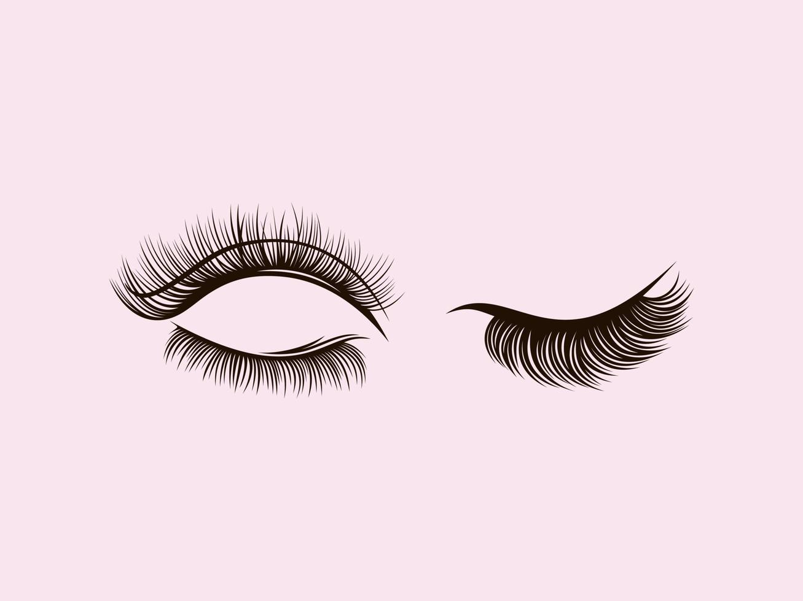

Extensiones de Pestañas |
|  |
Las extensiones de pestañas son fibras que se aplican individualmente y se fijan de forma manual a sus pestañas naturales para conferirles temporalmente un mayor volumen y longitud. Aplicadas siempre por una esteticista cualificada, desde las pestañas 4D hasta las Rusas, existe una gran variedad de técnicas disponibles que prometen unas pestañas más gruesas y espesas durante un mes. Totalmente diferentes de las pestañas postizas con tira de pegamento que se llevaban en su adolescencia. |